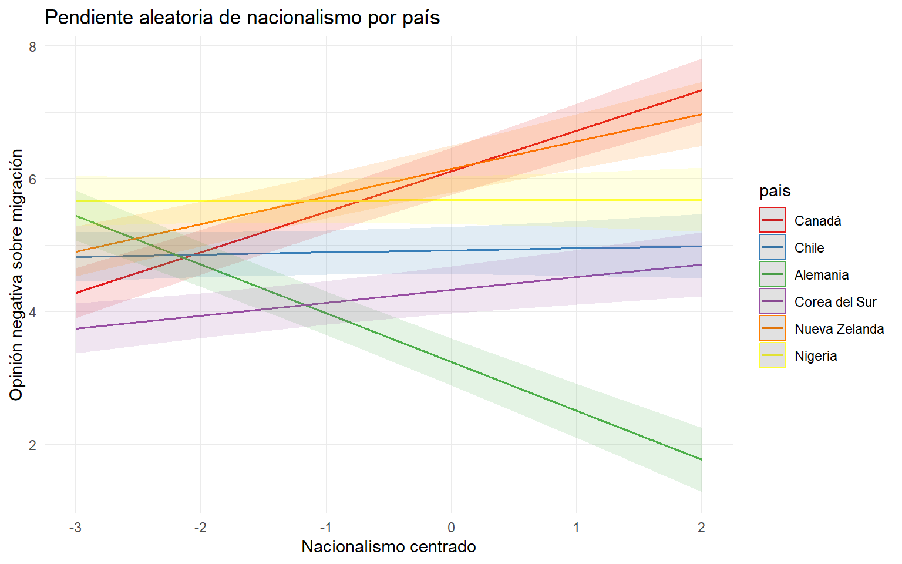
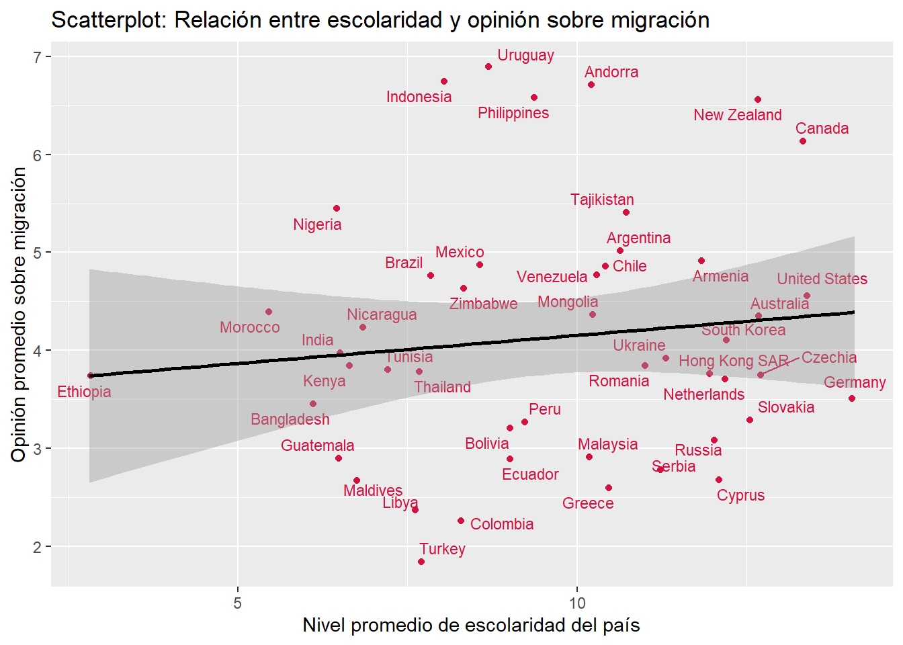
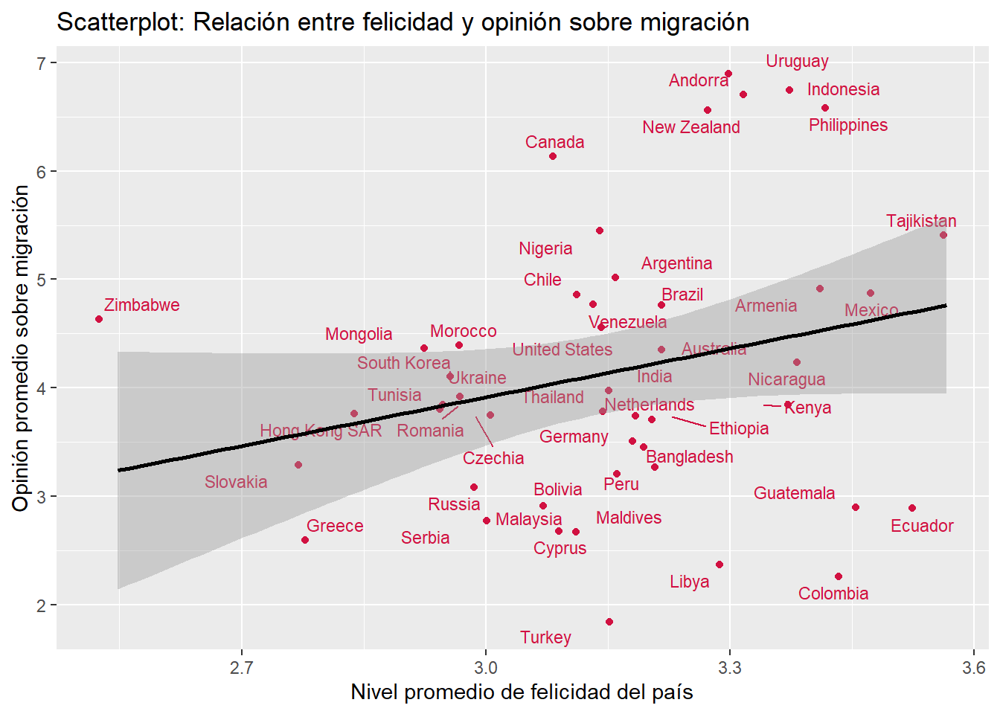
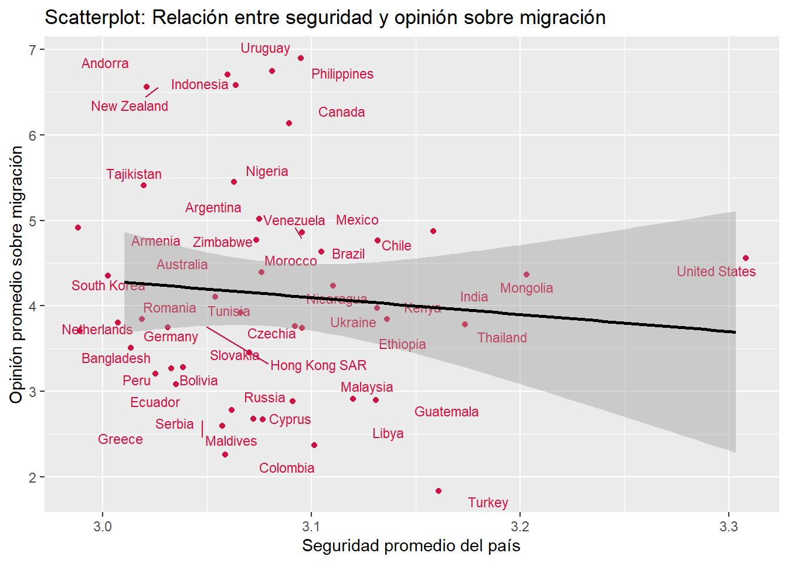

Estudio sobre las opiniones negativas hacia la migración desde un análisis multinivel: análisis según país
Análisis de Datos Multinivel
Abstract
La migración se ha vuelto uno de los principales fenómenos a nivel global, producto del aumento constante de los flujos migratorios (ONU, s.f.; OCDE, 2024), y de la mano con esto han emergido posiciones y opiniones negativas hacia las personas migrantes, es por esto que la presente investigación busca estudiar las opiniones negativas hacia los migrantes desde una perspectiva multinivel, para poder atender a aquellos factores tanto contextuales como individuales, buscando responder a la pregunta ¿En qué medida los factores contextuales de cada país, como su felicidad promedio, su promedio de percepción de seguridad y su promedio de escolaridad, y los factores individuales, como el ser mujer, la posición política, el nacionalismo, y el ingreso propio, influyen en tener una opinión negativa hacia las personas migrantes? Se ocuparon datos de la World Values Survey, trabajando con 47 países de todas partes del mundo y un total de 53696 observaciones, y se estimaron un total de 6 modelos. Los principales hallazgos contextuales fueron que países con mayor felicidad promedio tienden a opiniones positivas, países con mayor percepción de seguridad tienden a opiniones negativas y la escolaridad promedio parece no ser significativa. Respecto a las variables individuales, el ser mujer no es significativa por lo que no habrían diferencias entre ser mujer u hombre respecto a las opiniones sobre la migración, las posiciones políticas de derecha tienden a opiniones negativas, las posiciones nacionalistas tienden hacia opiniones negativas y aquellos sectores con mayor ingreso presentan opiniones positivas respecto a la migración. Por último, la felicidad promedio no es significativa en su relación respecto al nacionalismo para atenuar el efecto de este.
Introducción
La migración es hoy en día uno de los fenómenos más contingentes a nivel mundial, de acuerdo a la ONU (s.f.) el número de migrantes a nivel internacional corresponde a 304 millones de personas aproximadamente, un número que se ha duplicado desde 1990. Un claro ejemplo de esto lo encontramos en el último informe de la OCDE, donde se da cuenta de un aumento sostenido de la migración hacia los países pertenecientes a este (2024). Estos procesos migratorios pueden explicarse por diversos factores, convirtiéndolo en un fenómeno multicausal relacionado a causas económicas, políticas, decisiones personales, etc. encontrando cuestiones contextuales e individuales (Armijos-Orellana et al, 2022). A su vez, han aparecido opiniones negativas hacia las personas migrantes, cayendo directamente en posiciones anti migrantes y discriminatorias, ejemplo de esto es que a nivel nacional, un 33% cree que los migrantes no han traído ningún beneficio para el país (IPSOS, 2025). A nivel internacional, los datos muestran una tendencia de la opinión negativa hacia los migrantes con una variabilidad según países, pero con la tendencia hacia las opiniones negativas (IPSOS, 2024; Migration Data Portal, 2023).
Respecto a la situación de los migrantes, desde la sociología podemos enmarcarnos en los análisis de la condición de estigma (Goffman, 1963) en la que comprendemos esta como una condición o atributo social desvalorizante que afecta a las personas, en este caso, por su condición de migrante. Goffman (1963) plantea que esto se da de manera relacional, definido por la mirada del otro, por lo que el estudio y análisis de las opiniones negativas sobre los migrantes se vuelven fundamentales en tanto el fenómeno migratorio está cada vez más presente, y en términos de poder aportar a la disciplina a estudiar estas relaciones, viendo qué factores influyen más en la condición del estigma migrante.
Sobre las cuestiones individuales que influyen hacía una opinión negativa de las personas migrantes encontramos una relación entre las posiciones de derecha y una opinión negativa hacia la migración, la tendencia muestra que usualmente las personas de derecha son quienes concentran opiniones negativas hacia las personas migrantes, sobre todo bajo el contexto de las nuevas derechas a nivel global (Servicio Jesuita a Migrantes, 2020; Akkerman, 2018). Es decir, las personas de derecha tienden a tener opiniones negativas hacia la migración. En conjunto a esto, existe una tendencia hacia posiciones más nacionalistas que suelen ir de la mano con una negatividad hacia la migración, enmarcado en discursos relacionados con un mayor orgullo nacional (Akkerman, 2018; Buraschi y Aguilar-Idañez, 2023), el nacionalismo suele implicar una opinión negativa hacia las personas migrantes, y aparece como un fenómeno constante usualmente relacionado a las demás variables individuales (Akkerman, 2018; Buraschi y Aguilar-Idañez, 2023; Servicio Jesuita a Migrantes, 2020). Las opiniones negativas, también suelen manifestarse más en hombres que respecto a las mujeres, por lo que podría existir alguna tendencia hacia que la mujeres tienen una mejor opinión respecto a las personas migrantes (SJM, 2020). Otro factor individual, es el nivel socioeconómico, ya que puede influir en una opinión negativa hacia la migración, producto de que existiría una posible competencia entre las personas migrantes y las personas de bajos ingresos por aquellas ocupaciones de menor complejización, y que presentan un menor nivel de ingreso (Romero, 2021; Emmenegger y Klemmensen, 2013).
Respecto a factores de nivel contextual, podemos encontrar desde la teoría psicosocial se plantea cómo las emociones pueden influir en una conducta prosocial, un mayor bienestar emocional y particularmente el sentimiento de felicidad tiene una asociación positiva con comportamientos prosociales, que puede llevar a una mejor opinión con las personas migrantes (Espelt et al, 1998). A esto se suma que la literatura reciente ha tenido un énfasis en el análisis y hacia la felicidad de las personas migrantes, pero no se ha estudiado a fondo la felicidad de las personas de los países que reciben a las personas migrantes, mostrando un vacío dentro de los estudios (Hendriks & Bartram, 2018; Hinger, 2024). Se vuelve interesante estudiar el posible efecto de estos comportamientos prosociales con la migración, tomado el promedio de la felicidad del país, por la posible influencia de un contexto de mayor felicidad, y cómo podría influir este contexto en otras variables, atenuando sus posibles efectos. Por otro lado, tenemos que la percepción de la seguridad a nivel país puede afectar la opinión hacia la migración, en vista de que en distintos países se tiende a relacionar a las personas migrantes con fenómenos delictuales y por ende tienden a opiniones negativas (IPSOS, 2024; IPSOS 2025). Por último, encontramos la escolaridad promedio por país, ya que la escolaridad influye de manera parecida a la de tener menores ingresos, existiendo una competencia por aquellos puestos menos calificados, y por ende que requieren una menor especialización o estudios (Romero, 2021; Emmenegger y Klemmensen, 2013), y se considera a nivel contextual en tanto la educación puede ser un indicador del desarrollo de un país y el desarrollo sostenible (Grupo Banco Mundial, 2024; Keenan, 2023), haciendo referencia un país con menor nivel educativo promedio tiende a influir a una opinión negativa.
Como vemos, tenemos un fenómeno migratorio que ha aumentado a nivel global y a su vez, una tendencia hacia la opinión negativa respecto a las personas migrantes, por lo que el objeto de estudio son las opiniones negativas hacia las personas migrantes, buscando conocer como influyen factores asociados a características individuales y contextuales a nivel país. Los datos muestran una variabilidad entre los países por lo que se hace interesante el análisis desde una perspectiva multinivel para conocer aquellos factores que inciden en que tengamos opiniones distintas respecto a los migrantes a nivel mundial, sumado a la influencia de factores individuales y contextuales en el fenómeno. Ante esto, se plantea la pregunta “¿En qué medida los factores contextuales de cada país, como su felicidad promedio, su promedio de percepción de seguridad y su promedio de escolaridad, y los factores individuales, como el ser mujer, la posición política, el nacionalismo, y el ingreso propio, influyen en tener una opinión negativa hacia las personas migrantes?”.
Objetivos
En este estudio se pretende abordar las opiniones negativas hacia la migración en distintos países a través de un enfoque multinivel, en el cual se consideran tanto factores individuales como contextuales, para determinar si existen patrones contextuales que puedan dar una explicación a posibles diferencias sistemáticas entre países.
Objetivo general:
Identificar en qué medida las opiniones negativas hacia la migración se ven influidas por el país de residencia.
Hipótesis:
Nivel 1 (individual):
\(H_1\) Personas que se identifican con posiciones políticas inclinadas a la derecha tenderán hacia opiniones negativas respecto a las personas migrantes.
\(H_2\) Las personas con mayores niveles de ingresos tenderán hacia una opinión positiva hacia las personas migrantes.
\(H_3\) Las mujeres tienen opiniones positivas hacia las personas migrantes en comparación a los hombres.
\(H_4\) Personas con tendencias nacionalistas tenderán hacia una opinión negativa hacia las personas migrantes.
Nivel 2: (país):
\(H_5\) Países con un mayor promedio de felicidad, presentan opiniones positivas hacia la migración.
\(H_6\) Países con mayores promedios de años de escolaridad, presentan opiniones positivas hacia las personas migrantes.
\(H_7\) Países con una mayor percepción de inseguridad, presentan una opinión negativa hacia las personas migrantes.
Interacción entre niveles:
- \(H_8\) El promedio de felicidad de un país atenúa el efecto del nacionalismo en la opinión frente a las personas migrantes.
Datos, variables y método
Datos
La base utilizada es la séptima ola del World Values Survey (WVS), con datos recolectados entre 2017 y 2022. Con esto, es posible construir una estructura de datos de dos niveles: nivel 1 (personas) y nivel 2 (países), anidados en la variable país. Para preparar los datos, se aplicó un proceso de limpieza que incluyó la recodificación y eliminación de valores perdidos por listwise, resultando en una base final de 53.696 casos en 47 países.
Variable dependiente.
Respecto a la variable dependiente se elaboró una escala sumativa de opiniones hacia los migrantes (op_mig) a partir de 5 ítems, codificados en una escala de 0 a 10, donde el valor más alto (10) indica una opinión positiva hacia los migrantes y el valor más bajo (0) indica una opinión negativa frente a la migración. Los ítems considerados fueron de las variables Q124, Q126, Q128 y Q129, que expresan opiniones respecto a la migración bajo la consigna “Desde su punto de vista, ¿cuáles han sido los efectos de los inmigrantes en el desarrollo de este país?”, los efectos que se consultaban eran “aumentan la criminalidad” (Q124), “aumentan el riesgo de terrorismo” (Q126), “aumentan el desempleo” (Q128) y por último “llevan al conflicto social” (Q129). Estos ítems tenían tres posibilidades de respuesta: De acuerdo (2); Difícil de decir (1); En desacuerdo (0). Se invirtieron los valores de 2 y 0, para poder tener resultados de a mayor puntaje en la escala, mejor opinión hacia migrantes. Finalmente, se incluyó el ítem Q121 (Ahora nos gustaría saber su opinión sobre las personas de otros países que vienen a vivir a este país: los inmigrantes. ¿Cómo evaluaría el impacto de estas personas en el desarrollo del país?), pregunta que utiliza una escala Likert que va de Muy bueno (5) a Muy malo (1). Para mantener la coherencia con la dirección de la escala general, se recodificaron las categorías 1 y 2 como 0, la categoría 3 como 1, y las categorías 4 y 5 como 2. Esta escala presenta un alfa cronbach de 0.77 dando cuenta de una consistencia interna suficiente para el análisis estadístico, con una mediana de 4, y un promedio de 4,25 (sd=3.03), indicando una leve tendencia hacia opiniones negativas al estar bajo el promedio.
| Statistic | N | Min | Pctl(25) | Median | Mean | Pctl(75) | Max | St. Dev. |
| op_mig | 53,696 | 0 | 2 | 4 | 4.25 | 7 | 10 | 3.03 |
| female | 53,696 | 0 | 0 | 1 | 0.51 | 1 | 1 | 0.50 |
| nacionalismo | 53,696 | 1 | 3 | 4 | 3.44 | 4 | 4 | 0.76 |
| pos_pol | 53,696 | 1 | 5 | 5 | 5.79 | 8 | 10 | 2.46 |
| personal_income | 53,696 | 1 | 4 | 5 | 5.03 | 6 | 10 | 2.09 |
Variables independientes de nivel 1
Las variables independientes a nivel individual son: nacionalismo (Q254), cuyas opciones de respuesta van desde Muy orgullosa/o (1) a Para nada orgullosa/o (4). Luego se encuentra la variable ingreso relativo del hogar (personal income, Q288) que consta de una escala de 1 (ingreso más bajo) a 10 (ingreso más alto). También se incluyó la variable female (Q260), y recodificada: 0 = Masculino y 1 = Femenino. Por último, se utilizó la variable autoubicación ideológica en el eje izquierda-derecha (pos_pol), que se encuentra en la pregunta Q240, que consiste en una escala del 1 (izquierda) al 10 (derecha). Los principales estadísticos descriptivos pueden ser encontrados en la Tabla 1, destacamos los resultados de pos_pol, donde se tiende al centro con una mediana 5 y promedio de 5.79 (sd=2.46), también vemos que nacionalismo tiende a que la mayoría presenta un mayor orgullo con promedio 3.44 y mediana 4.
| Statistic | N | Min | Pctl(25) | Median | Mean | Pctl(75) | Max | St. Dev. |
| pais | 47 | 20 | 210.5 | 458 | 436.49 | 642.5 | 862 | 260.99 |
| happines_promedio_pais | 47 | 2.55 | 2.99 | 3.14 | 3.14 | 3.29 | 3.57 | 0.21 |
| seguridad_prom | 47 | 3.01 | 3.04 | 3.07 | 3.08 | 3.11 | 3.30 | 0.06 |
| meanschooling | 47 | 2.80 | 7.70 | 10.20 | 9.60 | 11.90 | 14.10 | 2.52 |
Variables independientes de nivel 2
Las variables independientes de nivel 2 son: el promedio de felicidad por país (Q46, “qué tan feliz te sientes en general”) con valores del 1 al 4, la cual se invirtió para que a mayor puntaje mayor felicidad promedio, la variable de años promedio de escolaridad (meanschooling) proveniente de datos de la UNESCO de 2018, y el promedio de sensación de seguridad por país (Q131, qué tan seguro te sientes en tu barrio) con valores del 1 al 4, invertidos para que a mayor seguridad un mayor número promedio. Los principales estadísticos descriptivos pueden ser encontrados en la Tabla 2, destacando que existe una alta sensación de seguridad con valores sobre 3 en promedio, mediana y en sus rangos, así como una alta sensación de felicidad promedio, nuevamente con valores rondando el 3 en todos sus descriptivos.
Métodos
Los métodos utilizados fueron la estimación de distintos modelos bajo una lógica de carácter multinivel, obteniendo un total de 6 modelos utilizando el programa Rstudio y la librería lmer. Se estimaron un modelo nulo para ver la variabilidad según país que se comentará más adelante, modelos con variables de nivel 1, nivel 2, nivel 1 + nivel 2, uno con pendiente aleatoria en nacionalismo, y un modelo de interacción entre niveles, para ver la interacción entre nacionalismo y felicidad promedio por país. Las fórmulas de los modelos fueron las siguientes:
Modelo nulo
\[ \text{op\_mig}_{ij} = \gamma_{00} + u_{0j} + r_{ij} \]
Modelo variables nivel 1
\[ \text{op\_mig}_{ij} = \gamma_{00} + \gamma_{01} \text{female} + \gamma_{02} \text{pos\_pol} + \gamma_{03} \text{nacionalismo} + \gamma_{04} \text{personal\_income} + u_{0j} + r_{ij} \]
Modelo variables nivel 2
\[ \text{op\_mig}_{ij} = \gamma_{00} + \gamma_{01} \text{meanschooling} + \gamma_{02} \text{happiness\_promedio\_pais} + \gamma_{03} \text{seguridad\_promedio\_pais} + u_{0j} + r_{ij} \]
Modelo con variables nivel 1 y 2
\[ \begin{aligned} \text{op\_mig}_{ij} &= \gamma_{00} + \gamma_{01} \text{meanschooling} + \gamma_{02} \text{happiness\_promedio\_pais} + \gamma_{03} \text{seguridad\_promedio\_pais} \\ &+ \gamma_{04} \text{female} + \gamma_{05} \text{pos\_pol} + \gamma_{06} \text{nacionalismo} + \gamma_{07} \text{personal\_income} + u_{0j} + r_{ij} \end{aligned} \]
Modelo con pendiente aleatoria en nacionalismo
\[ \begin{aligned} \text{op\_mig}_{ij} &= \gamma_{00} + \gamma_{01} \text{meanschooling} + \gamma_{02} \text{happiness\_promedio\_pais} + \gamma_{03} \text{seguridad\_promedio\_pais} \\ &+ \gamma_{04} \text{female} + \gamma_{05} \text{pos\_pol} + \gamma_{06} \text{nacionalismo} + \gamma_{07} \text{personal\_income} \\ &+ u_{0j} + u_{1j} \text{nacionalismo} + r_{ij} \end{aligned} \]
Modelo con interacción entre niveles felicidad y nacionalismo
\[ \begin{aligned} \text{op\_mig}_{ij} &= \gamma_{00} + \gamma_{01} \text{meanschooling} + \gamma_{02} \text{happiness\_promedio\_pais} + \gamma_{03} \text{seguridad\_promedio\_pais} \\ &+ \gamma_{04} \text{female} + \gamma_{05} \text{pos\_pol} + \gamma_{06} \text{nacionalismo} + \gamma_{07} \text{personal\_income} \\ &+ \gamma_{08} \text{happiness\_promedio\_pais} \times \text{nacionalismo} + u_{0j} + u_{1j} \text{nacionalismo} + r_{ij} \end{aligned} \]
Análisis
Bivariados

En la Figura 1 se muestra el diagrama de dispersión con la variable años promedio de escolaridad por país y opinión promedio sobre migración. En primer lugar cabe rescatar que hay una leve relación positiva entre la escolaridad promedio y las opiniones hacia la migración, señalando que un mayor nivel de escolaridad está asociado a un menor rechazo hacia la migración. Sin embargo, la pendiente es muy tenue, con los países bastante dispersos en el plano, lo que indica una débil relación con poca consistencia. Países como Nueva Zelanda y Canadá presentan altos niveles de escolaridad con una mayor aceptación de la migración, pero también países como Alemania o Eslovaquia, que tienen niveles similares de escolaridad promedio, presentan más opiniones vinculadas al rechazo hacia la migración.

La Figura 2 muestra la relación entre la variable de nivel promedio de felicidad del país con la variable de opinión promedio sobre migración. Se puede observar una relación positiva entre estas variables, indicando que países con un mayor promedio de felicidad están asociados a una mayor apertura hacia la migración. El diagrama muestra una pendiente más pronunciada que la del gráfico anterior y una menor dispersión de los datos, lo que señala una mayor consistencia en esta relación.

En la Figura 3 se muestra la relación entre la variable de promedio de sensación de seguridad y la variable opinión promedio sobre migración en un diagrama de dispersión. Se puede notar una leve relación inversa entre estas variables representada por la pendiente con una sutil inclinación. Esto quiere decir que una mayor sensación de seguridad está asociada a un mayor rechazo hacia la migración, sin embargo no constituye una relación robusta dada la característica de la pendiente.
Multivariados
| Nulo | Nivel 1 | Nivel 2 | Nivel 1 y 2 | Pendiente aleatoria nacionalismo | Interacción entre niveles Felicidad | |||||||||||||
|---|---|---|---|---|---|---|---|---|---|---|---|---|---|---|---|---|---|---|
| Predictors | Estimates | std. Error | p | Estimates | std. Error | p | Estimates | std. Error | p | Estimates | std. Error | p | Estimates | std. Error | p | Estimates | std. Error | p |
| (Intercept) | 4.13 | 0.19 | <0.001 | 4.14 | 0.19 | <0.001 | 4.15 | 0.18 | <0.001 | 4.16 | 0.18 | <0.001 | 4.16 | 0.18 | <0.001 | 4.16 | 0.18 | <0.001 |
| female | -0.01 | 0.02 | 0.672 | -0.02 | 0.02 | 0.384 | -0.03 | 0.02 | 0.210 | -0.03 | 0.02 | 0.210 | ||||||
| pos pol cmc | -0.08 | 0.00 | <0.001 | -0.08 | 0.00 | <0.001 | -0.08 | 0.00 | <0.001 | -0.08 | 0.00 | <0.001 | ||||||
| nacionalismo cmc | -0.09 | 0.02 | <0.001 | -0.09 | 0.02 | <0.001 | -0.12 | 0.05 | 0.027 | -0.12 | 0.06 | 0.028 | ||||||
| personal income cmc | 0.07 | 0.01 | <0.001 | 0.07 | 0.01 | <0.001 | 0.07 | 0.01 | <0.001 | 0.07 | 0.01 | <0.001 | ||||||
| happiness gmc | 1.74 | 0.88 | 0.047 | 1.74 | 0.88 | 0.047 | 1.72 | 0.81 | 0.034 | 1.64 | 0.88 | 0.061 | ||||||
| seguridad gmc | -0.35 | 0.04 | <0.001 | -0.34 | 0.04 | <0.001 | -0.34 | 0.04 | <0.001 | -0.34 | 0.04 | <0.001 | ||||||
| meanschooling gmc | 0.09 | 0.07 | 0.228 | 0.09 | 0.07 | 0.227 | 0.05 | 0.07 | 0.445 | 0.05 | 0.07 | 0.446 | ||||||
| happiness gmc × nacionalismo cmc |
-0.06 | 0.26 | 0.804 | |||||||||||||||
| Random Effects | ||||||||||||||||||
| σ2 | 7.49 | 7.43 | 7.48 | 7.42 | 7.34 | 7.34 | ||||||||||||
| τ00 | 1.61 pais | 1.61 pais | 1.52 pais | 1.52 pais | 1.52 pais | 1.53 pais | ||||||||||||
| τ11 | 0.12 pais.nacionalismo_cmc | 0.13 pais.nacionalismo_cmc | ||||||||||||||||
| ρ01 | 0.41 pais | 0.42 pais | ||||||||||||||||
| ICC | 0.18 | 0.18 | 0.17 | 0.17 | 0.18 | 0.18 | ||||||||||||
| N | 47 pais | 47 pais | 47 pais | 47 pais | 47 pais | 47 pais | ||||||||||||
| Observations | 53696 | 53696 | 53696 | 53696 | 53696 | 53696 | ||||||||||||
| Marginal R2 / Conditional R2 | 0.000 / 0.177 | 0.007 / 0.184 | 0.017 / 0.183 | 0.023 / 0.190 | 0.021 / 0.195 | 0.020 / 0.194 | ||||||||||||
En la Tabla 3 se presenta una comparación entre los modelos estimados. En primer lugar está el modelo sin predictores. En segundo lugar está el modelo con variables de nivel 1: sexo (female), autoubicación ideológica (pos_pol_cmc), nacionalismo (nacionalismo_cmc) e ingreso relativo del hogar (personal_income_cmc). Todas estas variables están centradas a la media del grupo. En tercer lugar se encuentra el modelo con las variables de nivel 2: nivel promedio de felicidad (happiness_gmc), promedio de sensación de seguridad (seguridad_gmc) y años promedio de escolaridad (meanschooling_gmc). Estas variables están centradas a la gran media. En cuarto lugar está el modelo con las variables de nivel 1 y nivel 2. En quinto lugar se encuentra el modelo con variables de nivel 1 y 2 con nacionalismo como pendiente aleatoria. En sexto y séptimo lugar se encuentran los modelos de interacción entre niveles con las variables nivel promedio de felicidad y nacionalismo; y sensación de seguridad promedio con nacionalismo, respectivamente. Para todos los modelos fueron centradas las variables, a la gran media para aquellas contextuales, y a la media del grupo para aquellas individuales, a excepción de female por su carácter de dummy. Esto se realizó para poder interpretar mejor nuestros efectos y lograr un mejor ajuste de los modelos, sobre todo considerando que las variables contextuales no presentaban un valor 0 real y muchas no tenían ninguna medición en su nivel más bajo, mientras que en las variables individuales se realizó pues no presentaban valores 0.
Respecto al modelo nulo, el intercepto muestra un valor promedio de 4.13 de la variable independiente, es decir, el promedio de la opinión hacia los migrantes, en una escala de 1 a 10, se encuentra relativamente al centro con más cercanía hacia el rechazo hacia los migrantes cuando no se considera ningún predictor. Además el coeficiente de correlación intraclase es de 0.18, lo que indica que un 18% de la varianza se explica por diferencias entre países, lo cual justifica el uso de modelos multinivel.
Al incorporar predictores de nivel 1, en los datos del segundo modelo se puede observar que la autoubicación política, el nacionalismo y los ingresos relativos del hogar influyen significativamente en el modelo, sin embargo su efecto es muy leve con un -0.08, y -0.09 y un 0.07 respectivamente. Esto comprobaría nuestras hipótesis de carácter individual, a excepción de la de female. Además, la variable female no resulta significativa, lo que indica que no existirían diferencias entre ser mujer u hombre respecto a tener una opinión negativa hacia los migrantes. Vemos también que sus errores estándar se encuentran muy cercanos al 0, Por último, cabe mencionar que el R2 marginal es de 0.007, lo que significa que los predictores de nivel 1 explican una proporción muy pequeña de la varianza total de la variable dependiente.
En el tercer modelo se incorporan las variables de nivel 2 , donde se visualiza que tanto el promedio de felicidad por país y la percepción de seguridad tienen un efecto significativo. La primera variable cuenta con un nivel de significancia del 95% y la segunda con un 99.9%. Felicidad promedio cuenta con un pendiente de 1.74, por lo que se interpreta que a mayor felicidad hay una opinión más positiva hacia los migrantes. Vemos que acá el error estándar de felicidad promedio destaca al ser mucho mayor al de las otras variables, y ser la mayor de todos los errores estándar de los modelos con un valor de 0.88, indicando una posible mayor variabilidad de esat variable.Por otro lado, la variable seguridad promedio cuenta con una pendiente negativa de -0.35, dando una relación inversa con opinión positiva hacia los migrantes, aceptando la hipótesis nula de nuestra hipótesis ya que aquellos países que presentan una mayor percepción de seguridad son los que tendrían opiniones negativas hacia las personas migrantes.Por otro lado, la variable meanschooling no es estadísticamente significativa, por lo que las diferencias entre aquellos con más y menor años de escolaridad, respecto a la opinión hacia los migrantes, no es distinta de 0.
En el modelo con ambos niveles se mantienen todos los efectos significativos anteriores, manteniéndose los valores de sus pendientes con un leve cambio en el efecto de nacionalismo que sube un 0.01 respecto al modelo anterior. En este modelo el R2 marginal sube a 0.023, indicando un mayor ajuste en relación a los modelos anteriores pero aún su capacidad explicativa es limitada.La poca variabilidad puede plantear que no existen grandes alteraciones en los efectos al integrar variables de un nivel distinto respecto a lo que logran explicar sobre opinión negativa hacia la migración las variables individuales
En el modelo con pendiente aleatoria para nacionalismo se muestra que τ₁₁= 0.12, sugiriendo que el efecto del nacionalismo no es el mismo en todos los países. La pendiente es de -0.12 con significancia estadística (p = 0.027), indicando que por cada punto que incrementa nacionalismo la puntuación sobre la escala de opinión sobre los migrantes disminuye en promedio 0.12 unidades, demostrando su relación inversa. Vemos también que se pierde significancia de la variable nacionalismo, mientras que happiness gana significancia al incluirse el intercepto aleatorio. Además, vemos que ρ₀₁ = 0.41, lo que indica que a mayor intercepto del país, se tiende a tener un mayor efecto del nacionalismo.
En el modelo de interacción entre la felicidad promedio del país con el nacionalismo individual, vemos que se pierde significancia estadística de la variable happiness al incluir la variable de interacción, sumado a que la interacción como tal no resulta significativa estadísticamente. Sus demás valores (ρ₀₁, τ₁₁, σ²) se mantienen similares a los del modelo anterior que no incluía la variable de interacción pero si la pendiente aleatoria, presentando un R2 marginal inferior por 0.01. Esto lleva a un rechazo de la hipótesis número 8 que se planteó en un principio.
A modo general, respecto a medidas de ajuste, encontramos que existe una varianza residual bastante estable, con valores σ² similares, variando entre el 7.42 y el 7.49 en los modelos que no incluyen pendiente aleatoria, dando a entender que el error a nivel individual se mantiene similar entre distintos modelos. Por el otro lado, el τ₀₀ muestra una reducción de la varianza del intercepto aleatorio entre países, dando cuenta de que a medida de que incluímos variables contextuales disminuye el τ₀₀ (de 1.61 a 1.52), lo que se debe a que parte de esa variabilidad sería explicada por los factores contextuales incluídos. También de modo general, respecto a los interceptos, vemos que no varían mucho entre modelos, estando entre el 4.13 y el 4.16 en todos los casos, bastante cercano a la media de la escala de opinión hacia los migrantes que podemos ver en la Tabla 1.
Interacción entre niveles y pendiente aleatoria.
En la Figura 4 se observa la incorporación de aleatorizar la pendiente de la variable nacionalismo. En este se presenta un país representante de cada continente, separando América en norte y sur, quedando 6 países (Canadá, Chile, Alemania, Corea del Sur, Nueva Zelanda y Nigeria), con pendientes distintas. Demostrando que la variable se comporta de forma distinta entre los países, descartando la posibilidad de cometer una falacia ecológica (Van Poppel y Day, 1996)
La Figura 5 refleja la interacción entre nacionalismo y la opinión sobre los migrantes, moderada por el nivel promedio de felicidad por país, sin embargo, como se observa en el modelo 5, la interacción entre estas variables no es estadísticamente significativa. Por lo que no se puede asegurar que la influencia de la variables felicidad promedio de los países atenúa el efecto del nacionalismo. La visualización gráfica nos ayuda a denotar como esta diferencia en el efecto no es significativa, las rectas al no interceptar, no se determina una diferenciación notoria en las pendientes de cada una.
Devianza y casos influyentes
| npar | AIC | BIC | logLik | deviance | Chisq | Df | Pr(>Chisq) | |
|---|---|---|---|---|---|---|---|---|
| Modelo 4: Pendiente aleatoria | 12 | 259806.3 | 259912.9 | -129891.1 | 259782.3 | NA | NA | NA |
| Modelo 5: Interacción entre niveles | 13 | 259808.2 | 259923.8 | -129891.1 | 259782.2 | 0.064 | 1 | 0.801 |
Como se observa en la Tabla 4 se utilizó un test de desvianza que busca comparar el Modelo 4 y 5, con la finalidad de comprobar si el modelo con interacción entre niveles tiene un mejor ajuste. La prueba de razón de verosimilitud (Chi-cuadrado = 0.064, p>0.1) indica que el modelo que incluye la interacción entre niveles no presenta mayores diferencias al modelo solo con pendiente aleatoria, sin existir diferencias significativas entre ambos modelos, pese a la inclusión de la variable de interacción entre niveles.
Por último, se realizó una estimación de casos influyentes utilizando test de cook para el modelo 4 (al ser el que mejor ajusta tras el test de desvianza y observando los R2 marginales), en los que se encontraron algunos países que se mostraban influyentes y lejanos a los parámetros del modelo, pero ninguno de estos resultó ser significativo, por lo que se resolvió mantener el modelo tal y como estaba.
Conclusiones
Los principales hallazgos indican que los predictores como posición política, nacionalismo y estatus social subjetivo son relevantes, ya que influyen en la opinión que se tiene frente a los migrantes. Se puede establecer que las hipótesis 1, 2 y 3 se confirman, donde se observa que tanto una orientación política hacia la derecha como niveles altos de nacionalistas se asocian a tener opiniones más negativas hacia los migrantes. Por otro lado, las personas que perciben un ingreso más alto tienden a mostrar opiniones más positivas. Sin embargo, la hipótesis número 4 no se confirma, ya que ser mujer no presenta una diferencia significativa en comparación a los hombres frente a la opinión sobre los migrantes.
Respecto de las hipótesis de segundo nivel, sólo la hipótesis 5 es válida, ya que los países con un mayor promedio de felicidad presentan opiniones más positivas frente a los migrantes. Por su parte, la hipótesis referida al promedio de sensación de seguridad tiene significancia estadística, pero con una pendiente negativa, lo que indica una asociación inversa. Es decir, a mayor seguridad habrá una opinión más negativa hacia los migrantes. La hipótesis 6 se rechaza ya que la asociación del promedio de años de escolaridad por país con opinión frente a los migrantes, no tiene significancia estadística por lo que las diferencias no serían distintas de 0. La hipótesis de interacción entre niveles se rechaza, esto debido a que no presenta significancia estadística con un valor p>0.1.
Se destaca el utilizamiento de modelos multinivel ya que permitió poder analizar variables de índole contextual para explicar las opiniones negativas hacia la migración, expandiendo el análisis que usualmente se centra en factores individuales. Además, permite conocer los resultados anidándonos en distintos países, lo que se vuelve contingente cuando el fenómeno migratorio ocurre a nivel mundial y en diversos sectores del planeta, por lo que el estudio realizado permite acercarse a qué variables explican la diferencia entre países, y al incluir lo individual, permite conocer aquellos efectos que ya se relacionan con las interacciones mismas entre las personas, permitiendo acercarnos a las nociones de estigma (Goffman, 1963).
Dentro de las limitaciones que se encontró para este estudio, encontramos el bajo efecto que tuvieron gran parte de las variables, pese a su significancia estadística, sumado a que variables como female o meanschooling, que en la bibliografía aparecen como importantes, no presentaron significancia dentro de nuestros modelos. Esto abre paso a la posibilidad de nuevas investigaciones sobre el mismo tema, pero ahondando en otras posibles variables que se relacionen a éstas que no fueron significativas, como podrían serlo tratar desigualdad de género por sobre female, o indicadores de desarrollo por sobre solo la educación.
Bibliografía
Akkerman, T. (2024). Inmigración y redistribución en Europa: ¿a favor o en contra del Estado del bienestar? Revista CIDOB d’Afers Internacionals, (137), 47–62.https://www.cidob.org/sites/default/files/2024-09/47-62_TJITSKE%20AKKERMAN.pdf
Armijos-Orellana, A. C., Maldonado-Matute, J. M., González-Calle, M. J., & Guerrero-Maxi, P. F. (2022). Los motivos de la migración. Una breve revisión bibliográfica. Universitas-XXI, Revista de Ciencias Sociales y Humanas, (37), 223–246.https://doi.org/10.17163/uni.n37.2022.09
Banco Mundial. (2024). Educación: panorama general.https://www.bancomundial.org/es/topic/education/overview
Buraschi, D., & Aguilar-Idañez, M. J. (2023). La amenaza percibida y la redistribución: actitudes de los españoles hacia el gasto público destinado a los inmigrantes. Migraciones. Publicación del Instituto Universitario de Estudios sobre Migraciones, (60), 77–105.https://revistas.comillas.edu/index.php/revistamigraciones/article/view/18461/17228
Emmenegger, P., & Klemmensen, R. (2013). Immigration and redistribution revisited: How different motivations can offset each other. Journal of European Social Policy, 23(4), 406–422.https://doi.org/10.1177/0958928713492773
Goffman, E. (1963). Estigma. La identidad deteriorada. Editorial Amorrortu.
Global Migration Data Analysis Centre (IOM). (2023, 5 de abril). Public opinion on migration. Migration Data Portal. Recuperado el 30 de junio de 2025, dehttps://www.migrationdataportal.org/themes/public-opinion-migration
IPSOS. (2024). Ipsos Global Trends: In search of a new consensus – From tension to intention.https://www.ipsos.com/en/global-trends-2024
IPSOS. (2025). Claves Ipsos: Informe N.º 40. Ipsos.
Keenan, M. (2023). Human Development Index (HDI). Salem Press Encyclopedia. EBSCO.https://www.ebsco.com/research-starters/education/human-development-index-hdi
OCDE. (2024). International Migration Outlook 2024. OCDE Publishing.https://doi.org/10.1787/50b0353e-en
Organización de las Naciones Unidas. (s.f.). Migración.https://www.un.org/es/global-issues/migration
Romero Montero, A. (2021). Actitudes hacia la inmigración y preferencias redistributivas en España [Trabajo de grado, Universitat Autònoma de Barcelona].https://ddd.uab.cat/pub/tfg/2021/tfg_375812/TFG_aromeromontero2.pdf
Servicio Jesuita a Migrantes (SJM Chile). (2020). Barómetro de percepción de la migración 2018–2020. Actividad en redes sociales y su contexto.https://sjmchile.org/wp-content/uploads/2024/01/barometrofinal.pdf
Van Poppel, F., y Day, L.H. (1996). Una prueba de la teoría del suicidio de Durkheim sin cometer la «falacia ecológica». American Sociological Review , 500-507. https://multinivel-facso.netlify.app/files/readings/Poppel-TestDurkheimsTheory-1996.pdf